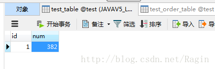
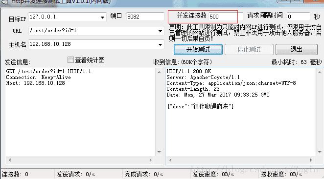
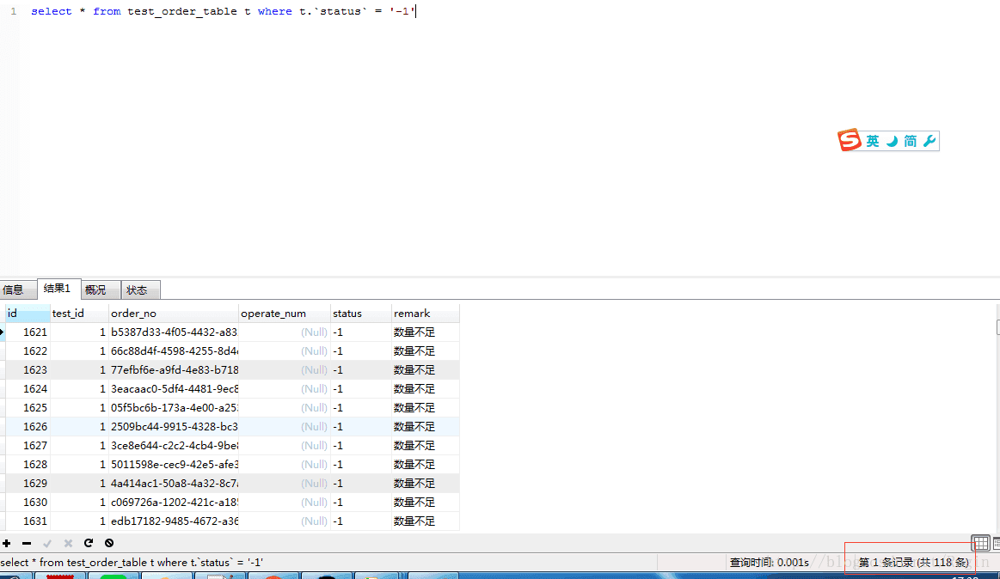

springmvc+spring线程池处理http并发请求数据同步控制问题
spring配置文件添加线程池配置
x
xmlns:task="http://www.springframework.org/schema/task" x
http://www.springframework.org/schema/task http://www.springframework.org/schema/task/spring-task.xsd x
<bean id="taskExecutor" class="org.springframework.scheduling.concurrent.ThreadPoolTaskExecutor"> <!-- 核心线程数 --> <property name="corePoolSize" value="${task.core_pool_size}" /> <!-- 最大线程数 --> <property name="maxPoolSize" value="${task.max_pool_size}" /> <!-- 队列最大长度 --> <property name="queueCapacity" value="${task.queue_capacity}" /> <!-- 线程池维护线程所允许的空闲时间，默认为60s --> <property name="keepAliveSeconds" value="${task.keep_alive_seconds}" /> </bean> <!-- 注解式 --> <task:annotation-driven /> x
maxOpenPreparedStatements=20 removeAbandoned=true removeAbandonedTimeout=1800 logAbandoned=true x
(name = "taskExecutor") private TaskExecutor taskExecutor; x
taskExecutor.execute(new Runnable() { public void run() { // TODO Auto-generated method stub try { //要进行的并发操作 } catch (Exception e) { // TODO Auto-generated catch block e.printStackTrace(); } } }); x
public class IndexController { int studentscount = 0; (value = "/index.html") public ModelAndView goIndex() { logBefore(logger, "列表Center"); ModelAndView mv = this.getModelAndView(); taskExecutor.execute(new Runnable() { public void run() { // TODO Auto-generated method stub // 得到所有学生人数 try { studentscount = coursesService.getStudentCount(pd); } catch (Exception e) { // TODO Auto-generated catch block e.printStackTrace(); } } }); mv.addObject("studentscount", studentscount); mv.setViewName("common/index"); return mv; ｝ spring配置文件添加线程池配置
x
<bean id="taskExecutor" class="org.springframework.scheduling.concurrent.ThreadPoolTaskExecutor"> <!-- 核心线程数 --> <property name="corePoolSize" value="3" /> <!-- 最大线程数 --> <property name="maxPoolSize" value="10" /> <!-- 队列最大长度 >=mainExecutor.maxSize --> <property name="queueCapacity" value="25" /> <!-- 线程池维护线程所允许的空闲时间 --> <property name="keepAliveSeconds" value="300" /> <!-- 线程池对拒绝任务(无线程可用)的处理策略 ThreadPoolExecutor.CallerRunsPolicy策略 ,调用者的线程会执行该任务,如果执行器已关闭,则丢弃. --> <property name="rejectedExecutionHandler"> <bean class="java.util.concurrent.ThreadPoolExecutor$CallerRunsPolicy" /> </property> </bean> controller类
x
package com.test.controller; import java.util.HashMap; import java.util.Map; import java.util.UUID; import javax.servlet.http.HttpServletRequest; import org.springframework.beans.factory.annotation.Autowired; import org.springframework.core.task.TaskExecutor; import org.springframework.stereotype.Controller; import org.springframework.web.bind.annotation.ModelAttribute; import org.springframework.web.bind.annotation.RequestMapping; import org.springframework.web.bind.annotation.ResponseBody; import com.test.entity.Order; import com.test.entity.Test; import com.test.service.TestService; @Controller @RequestMapping("/test") public class TestController { @Autowired private TaskExecutor executor; @Autowired TestService testService; @ResponseBody @RequestMapping("/order") public Map<String, Object> test(HttpServletRequest request){ //线程池+同步块 executor.execute(new Runnable() { @Override public void run() { synchronized (testService) { testService.insert(order); } } }); return null; } } 数据库有个字段num值为：382
http每请求一次,num都会-1
模拟并发500个请求
结果如图：


